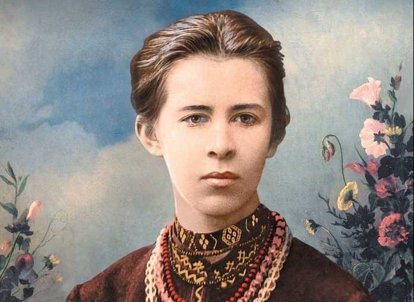

Леся Українка
Біографія
ПоходженняДитинство і впливи
Юність та освіта
Походження
Мати, Ольга Петрівна Драгоманова-Косач — дворянка
за походженням, поетеса й дитяча письменниця під псевдонімом Олена Пчілка, була активісткою українського
жіночого руху, видавала альманах «Перший вінок». Олена Пчілка займалася всебічною освітою, підтримкою
творчості
та лікуванням Лариси Косач (приватні педагоги, публікації, подорожі), і виховувала доньку сильною людиною
без
надмірного виявлення почуттів. Слід цієї «paidei» можна знайти в кожному творі «поодинокого мужчини».
Батько,
Петро Антонович Косач — дворянин, високоосвічений поміщик, який дуже любив літературу і живопис, дійсний
статський радник, повітовий маршалок. Дядько — Михайло Драгоманов, учений, громадський діяч, перед вимушеною
еміграцією до Франції й Болгарії співпрацював з Франком. Формував характер племінниці згідно зі своїми
соціалістичними переконаннями, ідеалами служіння батьківщині, які вона переросла, допомагав як літературний
критик і фольклорист. Мала старшого брата Михайла та молодших — Ольгу, Оксану, Миколу та Ізидору Косачів.
Дитячі роки пройшли на Волині: у Новограді-Волинському (1871 — весна 1879), Луцьку (весна 1879 — травень
1882),
у селі Колодяжне (з травня 1882), що під Ковелем. У будинку Косачів часто збиралися письменники, художники і
музиканти; влаштовували вечори і домашні концерти. Лариса Косач мала винятково сприятливі обставини для
шліфування вродженого мистецького хисту.
Дитинство та впливи
На десятий день після народження 23 лютого (7 березня) 1871 року
Ларису охрестили в Новоград-Волинській Соборній Преображенській церкві, хрещеними стали полковник Степан
Васильковський та рідна бабуся дворянка Єлизавета Драгоманова. Лариса Косач навчилася читати у 4 роки[7].
Леся
(одне з сімейних імен Лариси, що стало літературним псевдонімом. Серед інших: Зея, Зеїчка, Зеїсок, Boule
vagabonde (фр. Колобок)) та Михайло, яких упродовж життя єднала тривала дружба і в сім'ї називали спільним
ім'ям — Мишелосіє. Вони разом навчалися у приватних учителів. У січні 1876 року Олена Пчілка з Михайлом і
Ларисою приїхали до Києва попрощатися з М. Драгомановим перед його еміграцією і деякий час жили в нього.[8]
Влітку того ж року мати з Лесею та Михайлом відпочивали в селі Жабориці. Тут вона вперше почула розповіді
матері про Мавку. « …Видко було, що перебування в Жабориці зробило на Лесю дуже велике враження і дуже їй
сподобалося: вона, бувало, раз у раз із втіхою згадує, що те або те чула чи бачила в Жабориці… Жаборицькі
пісні, казки, різні повір'я, звичаї, купальські, жнив'яні і т. д. Леся добре пам'ятала і часто згадувала…[9]
«
У шість років навчилася вишивати. 26 травня (7 червня) 1877 року народилася сестра Оля, яка стане її доброю
подругою. Згодом вона зазначить, що в Лариси: « «такі самі риси обличчя, барва очей і волосся, як у батька,
так
само середній зріст, така ж постать, така сама тендітність», «однаково були лагідні та добрі безмежно»,
«надзвичайно стримані, терплячі та витривалі, з виключною силою волі», «однаково делікатні у відносинах з
людьми», «для любих людей чи справ могли поступитися багато чим, могли бути дуже поблажливими, але я не можу
уявити тої людини, тої справи, взагалі тої сили, що могла б примусити, батька чи Лесю однаково, зробити
щось,
що вони вважали за непорядне, нечесне. Щоб же зробити таке для власної вигоди чи користі, чи безпечності, то
про те не може бути й мови».[10] « Лариса Косач у волинському народному вбранні. 1878—1879 роки Коли в 1878
батьки Лариси поїхали на Всесвітню виставку до Парижа, доглядати дітей приїздила Олена Косач, сестра
Ларисиного
батька. Дружба з «тіткою Єлею» залишила помітний слід у житті та творчості поетеси[8]. 7 (19) листопада того
ж
року наказом міністерства внутрішніх справ Петра Косача перевели на роботу до Луцька. « …Батька нашого
переведено з обжитого місця, щоб покарати за його «українофільство» та за побачення, під час подорожі до
Парижа
на виставку 1878 року, з емігрантом, батьковим другом, а материним братом Михайлом Петровичем
Драгомановим[11]
Юність та освіта
З 13 літ (1884) Лариса Косач активно пише вірші. Перші спроби стараннями матері опублікувано на сторінках
галицьких українськомовних часописів «Зоря», «Дзвінок», ЛНВ («Конвалія», «Сафо», «Літо краснеє минуло» й
ін.).
Цього року з'явився псевдонім «Леся Українка». Маючи також художній хист, деякий час брала уроки у Київській
Рисувальній школі Олександра Мурашка, звідки залишилась одна картина олійними фарбами. Пізніше Ларисі
довелося
здобувати освіту самостійно, з материною допомогою. Про рівень її освіти може свідчити факт, що у
19-літньому
віці написала для своїх сестер підручник «Стародавня історія східних народів» (надрукований в Катеринославі,
1918). Знала багато європейських мов, крім слов'янських (української, російської, польської, болгарської),
також англійську, німецьку, французьку, італійську, давньогрецьку та латину, бралася за вивчення
грузинської,
шведської, іспанської. Тому багато перекладає, зокрема Гоголя, Тургенєва, Міцкевича, Марію Конопніцьку,
Гейне,
Гюґо, Свіфта, Шекспіра, Байрона, Жорж Санд, Аду Негрі, Гергарта Гауптмана, Метерлінка, Гомера. Серед
близького
оточення Лесі Українки були визначні вчені та громадсько-політичні діячі, які вплинули на її формування: М.
Драгоманов, В. Антонович, М. Старицький, М. Лисенко, М. Ковалевський. 9 (21) березня 1888 року народилася
сестра Ізидора, яку Леся безмежно любила, називаючи лагідно Гусінькою чи жартівливо Донною Дорою, і яку
неодноразово сумлінно доглядала під час хвороб, рятуючи їй життя.